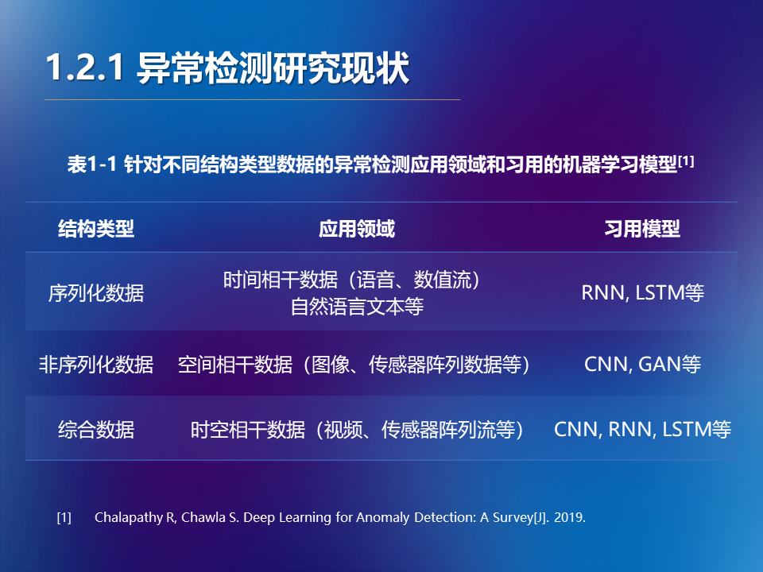
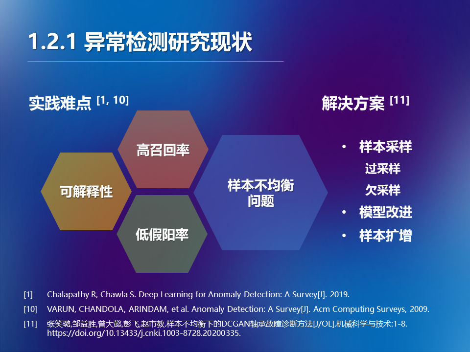
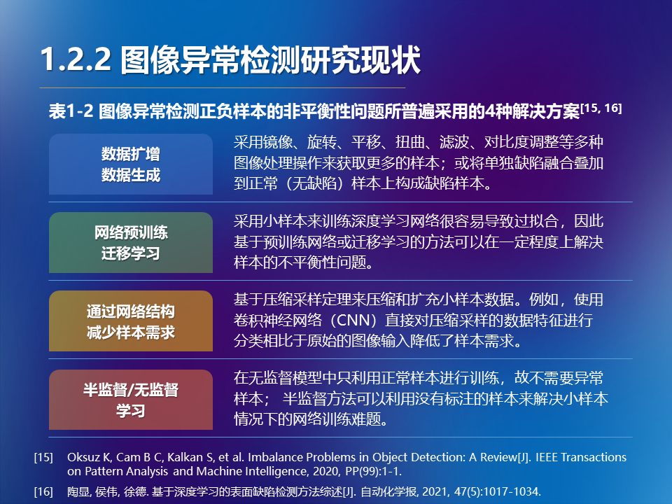
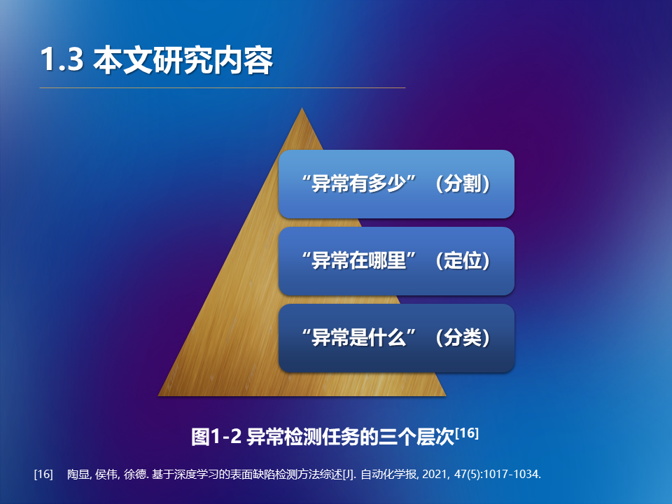
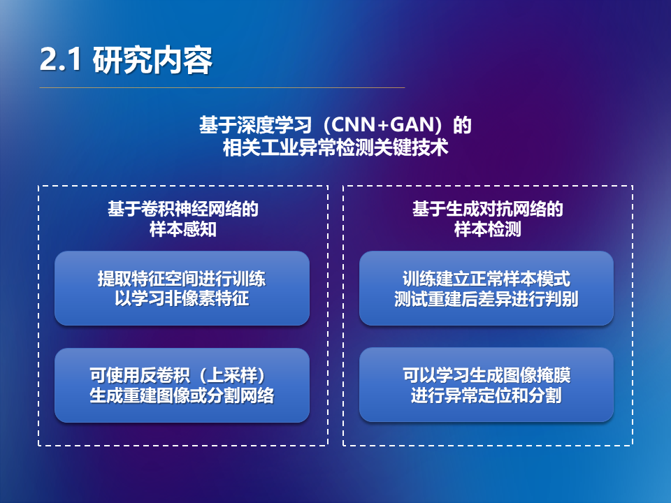
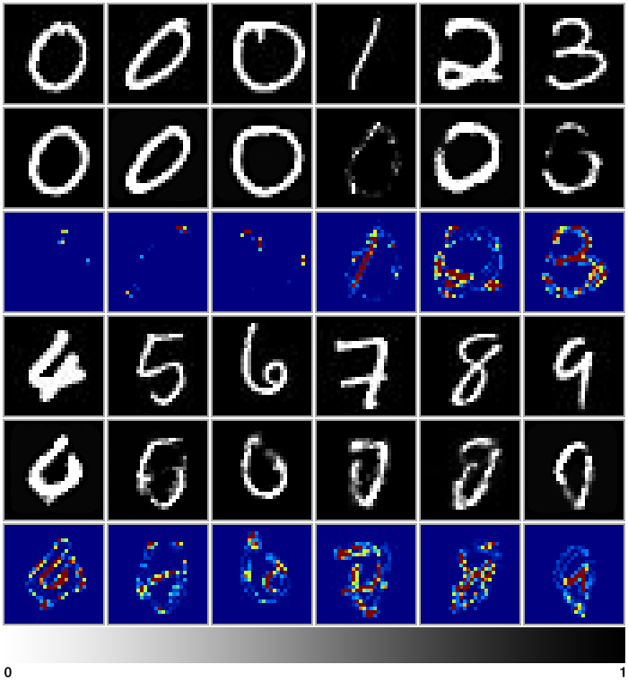
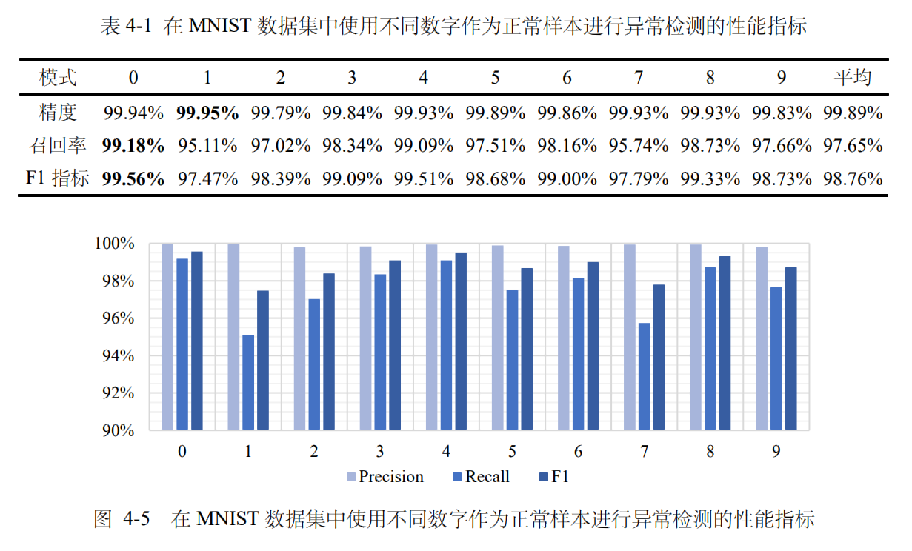
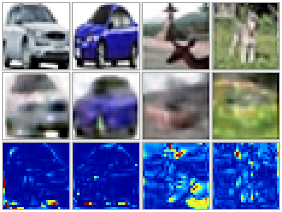
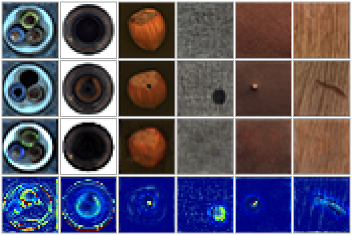

Bachelor's Thesis: Design and Implementation of Deep-Learning Based Algorithms for Anomaly Detection in Industrial Scenarios
With the development of information technology and its popularization in industrial production systems during the past half century, in today’s industrial anomaly detection workflow, the stages of image sample collection, transmission, response processing and archiving have basically achieved automation; while the decision-making process still generally relies on the traditional procedures of manual identification, which wastes much manpower and material resources, accompanied by shortcomings such as large errors, low efficiency, slow response, and poor coupling.
Establishing industrial anomaly detection technology that adapts to the development of the new era is the common demand and expectation of academia and industry. In recent years, Computer Vision-based image anomaly detection equipments have been gradually deployed on a large scale among various fields, and a number of Neural Network-based algorithms have also been widely used in various industrial scenarios. The use of such a method for industrial anomaly detection has many advantages over traditional methods and broad application prospects.





This paper integrates related Deep Learning algorithms and image anomaly detection technologies, and designs and implements the main model of the deep neural network industrial anomaly detection algorithm system composed of Convolutional Neural Network (CNN) and Generative Adversarial Network (GAN).
In the model of the algorithm, the generator can be used to reconstruct the normal image pattern of the test sample, which could be used to generate a pixel-level mask of the potential anomaly area, and based on which the algorithm can solve the problem of classification, location and segmentation of anomaly image simultaneously.

Compared with introducing and applying CNN or GAN models based on computer vision individually into industrial anomaly detection scenes, this algorithm comprehensively extracts the respective advantages of the two conventional models and combines them, which accordingly follows the solution to the difficulties of image anomaly detection such as small sample problems and background noise, and can effectively achieve system control key elements such as high interpretability, unbalanced sample adaptability, high recall rate and low false positive rate, as to a certain extent would be able to solve the shortcomings in some of the existing algorithms.
The deployment, testing and result evaluation of the algorithm in this paper on the MNIST handwritten digit recognition dataset, CIFAR-10 natural image dataset and MVTecAD industrial anomaly detection dataset show that the F1 index (average value) of its anomaly classification task is 98.76%, 89.16%, and 79.45% respectively, and all of which can generate high-quality reconstructed images and masks of anomaly areas. The algorithm could provide consistent and effective performance in anomaly detection tasks.



